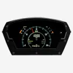
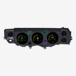

GRFX Series

GRFX fills the cluster with full-color screens. Pick a graphic theme, then set the colors and warning modes for each reading. Each gauge position can show an analog, digital or bar-graph readout.
Built-in GPS calibrates the speedometer for any tire size or gearing. Setup, calibration and updates run through the Dakota Digital app over Bluetooth, and the largest screen can show a backup camera, sold separately.
The sensors are included, and every system is engineered and built in Sioux Falls, South Dakota, with a limited lifetime warranty.
16 products
- GRFX-2017: Universal 5.75" x 12" Elliptical, Digital GRFX InstrumentsGRFX-2017$2,050.00

GRFX-3100: Universal Competition, Digital GRFX InstrumentsGRFX-3100$2,100.00- GRFX-3200: Universal Rectangle, Digital GRFX InstrumentsGRFX-3200$2,100.00
 GRFX-47C-PU: 1947-53 Chevy/GMC Pickup GRFX InstrumentsGRFX-47C-PU$2,000.00
GRFX-47C-PU: 1947-53 Chevy/GMC Pickup GRFX InstrumentsGRFX-47C-PU$2,000.00 GRFX-55C-PU: 1955-59 Chevy Pickup, GRFX InstrumentsGRFX-55C-PU$2,000.00
GRFX-55C-PU: 1955-59 Chevy Pickup, GRFX InstrumentsGRFX-55C-PU$2,000.00 GRFX-55C: 1955-56 Chevy Car GRFX InstrumentsGRFX-55C$2,000.00
GRFX-55C: 1955-56 Chevy Car GRFX InstrumentsGRFX-55C$2,000.00 GRFX-57C: 1957 Chevy Car GRFX InstrumentsGRFX-57C$2,000.00
GRFX-57C: 1957 Chevy Car GRFX InstrumentsGRFX-57C$2,000.00 GRFX-60C-PU: 1960-63 Chevy Pickup GRFX InstrumentsGRFX-60C-PU$2,100.00
GRFX-60C-PU: 1960-63 Chevy Pickup GRFX InstrumentsGRFX-60C-PU$2,100.00 GRFX-64C-PU: 1964-66 Chevy Pickup GRFX InstrumentsGRFX-64C-PU$2,100.00
GRFX-64C-PU: 1964-66 Chevy Pickup GRFX InstrumentsGRFX-64C-PU$2,100.00 GRFX-66C-CVL: 1966-67 Chevy Chevelle/ El Camino GRFX InstrumentsGRFX-66C-CVL$2,100.00
GRFX-66C-CVL: 1966-67 Chevy Chevelle/ El Camino GRFX InstrumentsGRFX-66C-CVL$2,100.00 GRFX-67C-CAM: 1967-68 Camaro/ Firebird GRFX InstrumentsGRFX-67C-CAM$2,000.00
GRFX-67C-CAM: 1967-68 Camaro/ Firebird GRFX InstrumentsGRFX-67C-CAM$2,000.00 GRFX-67C-PU: 1967-72 Chevy Pickup GRFX InstrumentsGRFX-67C-PU$2,100.00
GRFX-67C-PU: 1967-72 Chevy Pickup GRFX InstrumentsGRFX-67C-PU$2,100.00 GRFX-69C-CAM: 1969 Camaro GRFX InstrumentsGRFX-69C-CAM$2,000.00
GRFX-69C-CAM: 1969 Camaro GRFX InstrumentsGRFX-69C-CAM$2,000.00 GRFX-70C-CAM: 1970-81 Chevy Camaro GRFX InstrumentsGRFX-70C-CAM$2,100.00
GRFX-70C-CAM: 1970-81 Chevy Camaro GRFX InstrumentsGRFX-70C-CAM$2,100.00
GRFX-70C-CVL 1970-72 Chevy Chevelle SS/Monte Carlo/El Camino; 71 GMC Sprint SP GRFX InstrumentsGRFX-70C-CVL$2,100.00 GRFX-73C-PU: 1973-87 Chevy Pickup, 1973-91 Chevy Blazer, GMC Jimmy and Suburbans GRFX InstrumentsGRFX-73C-PU$2,050.00
GRFX-73C-PU: 1973-87 Chevy Pickup, 1973-91 Chevy Blazer, GMC Jimmy and Suburbans GRFX InstrumentsGRFX-73C-PU$2,050.00
Not sure what fits?
Talk to a tech in Sioux Falls, Monday to Friday, 8am to 5pm Central.